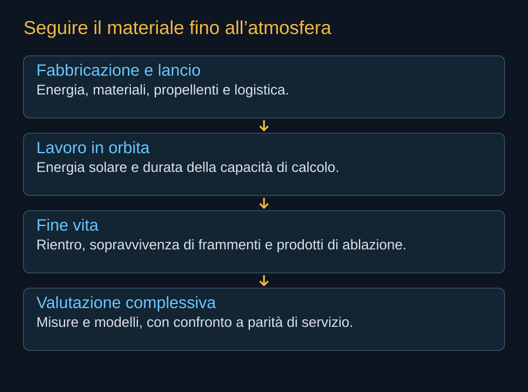
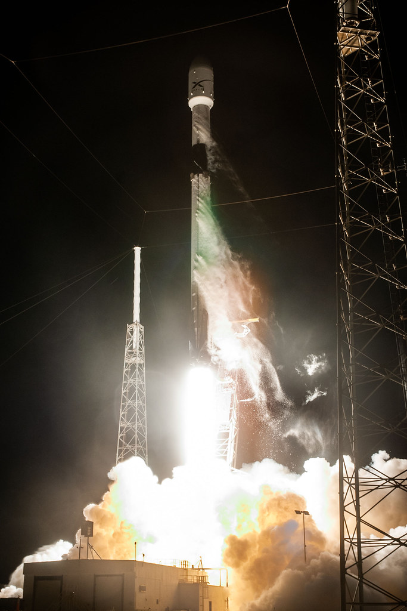

Un satellite può usare energia solare senza consumare acqua per una torre di raffreddamento. È un beneficio potenziale preciso, che non basta però a descrivere l’intero ciclo. Fabbricazione, trasporto, vita utile e dismissione restano attività materiali. Per confrontare Starmind con un impianto terrestre occorre seguire lo stesso servizio fino al risultato, includendo ciò che avviene prima e dopo il calcolo.
Il materiale cambia ambiente
Durante un rientro parte del veicolo può fondere, vaporizzare o frammentarsi. La rimozione dall’orbita riduce un rischio spaziale, ma trasferisce materiali nell’atmosfera. Il destino dei prodotti dipende da composizione, dimensione delle particelle e condizioni di rientro. La frase “brucia completamente” riguarda la sopravvivenza del veicolo, non l’annullamento della materia.
Nel 2023 misure NOAA identificarono metalli riconducibili a veicoli spaziali in particelle stratosferiche. È un risultato osservativo sulla composizione. Non determina da solo la quantità di danno all’ozono o al clima. Questa distinzione permette di riconoscere un effetto reale senza attribuirgli conseguenze che la misura non quantifica.


Misure e modelli devono restare riconoscibili
Il lavoro di Ferreira e colleghi del 2024 simulò processi di ossidazione dell’alluminio e discusse un potenziale effetto sull’ozono. Lo studio di Maloney e colleghi del 2025 esaminò accumulo e impatto radiativo con ipotesi sulle particelle e sulla loro distribuzione. I risultati dipendono da materiali, condizioni e rappresentazione dell’atmosfera.
Non è corretto moltiplicare la resa di un piccolo satellite teorico per un milione di AI1 senza conoscerne la composizione e il rientro. Non è corretto neppure ignorare i modelli perché l’effetto completo non è ancora misurato. Gli studi indicano domande da verificare e grandezze da monitorare; una crescita estrema aumenta il valore di questa conoscenza.
Il confronto a parità di lavoro
Un bilancio ambientale deve scegliere un’unità funzionale: una quantità di calcolo con qualità e disponibilità definite. Poi deve includere fabbricazione dei chip, energia del satellite, lanci, infrastrutture e ricambio. Confrontare un anno di esercizio orbitale con la costruzione completa di un impianto terrestre produrrebbe un risultato sbilanciato.
ASCEND collegava i benefici attesi a condizioni sul trasporto e sul ciclo di vita. La lezione metodologica è utile anche per Starmind: un’architettura favorevole in uno scenario può non esserlo con durata più breve, utilizzo minore o frequenza maggiore di sostituzione. Il risultato va presentato con sensibilità e limiti, non soltanto con un valore centrale.


.jpg){kind=link}
La fabbrica e le rampe sono sulla Terra
Il programma occupa territori per produrre e lanciare. Energia, acqua, rumore, trasporti e sicurezza coinvolgono comunità concrete. L’assenza di un grande data center in un luogo non implica l’assenza di infrastrutture terrestri. Parte dei carichi cambia posizione lungo la catena industriale.
Le autorizzazioni nazionali possono coprire competenze differenti. Frequenze, lanci, rientri e impatti ambientali non sono necessariamente esaminati dallo stesso organismo. La posizione SpaceX sui limiti della competenza FCC in materia di laser è un’argomentazione giuridica nel procedimento; non elimina le conseguenze fisiche della rete né le esigenze di altre valutazioni.
Il cliente, i dati e la responsabilità
Il calcolo rimane soggetto a esigenze di sicurezza, accesso e protezione dei dati anche se il processore orbita. Un’architettura deve permettere controllo degli utenti, isolamento dei carichi e gestione degli incidenti. La posizione spaziale non sostituisce contratti o responsabilità dell’operatore.
Starmind potrà essere valutato con maggiore precisione quando avrà dati di missione e un ciclo industriale misurabile. Intanto il beneficio energetico proposto e le domande ambientali devono stare nella stessa analisi. È il modo di comprendere quali vantaggi siano realmente nuovi e quali costi vengano trasferiti ad altri luoghi o tempi.
Fonti pubbliche e tracce
- NOAA, metalli da veicoli spaziali nella stratosfera. 16 ottobre 2023: osservazioni e collegamento al lavoro PNAS. Una rilevazione di composizione non quantifica da sola un danno all’ozono.
- Ferreira et al., rientri e potenziale effetto sull’ozono. Geophysical Research Letters, 2024. Simulazioni dell’ossidazione dell’alluminio; non misura dell’effetto di Starmind.
- Maloney et al., accumulo atmosferico dei prodotti di rientro. Journal of Geophysical Research: Atmospheres, 2025. Modello con ipotesi su materiali e distribuzioni delle particelle. Non estrapolare automaticamente percentuali a un milione di AI1.
- Thales Alenia Space, risultati dello studio ASCEND. 27 giugno 2024: studio europeo di fattibilità e condizioni ambientali. Non una centrale di calcolo già operativa.
- Secure World Foundation, commenti alla domanda SpaceX. 6 marzo 2026. Posizione del partecipante all’istruttoria su rischi cumulativi, trasparenza e autorizzazioni per fasi, non decisione FCC.
- SpaceX, risposta alla FCC datata 16 settembre 2026. Documento primario scaricato e letto. Incontro del 14 settembre; inviluppi a pagina 8, rientro a pagina 9. Dichiarazioni e modelli del richiedente, non decisione della FCC.